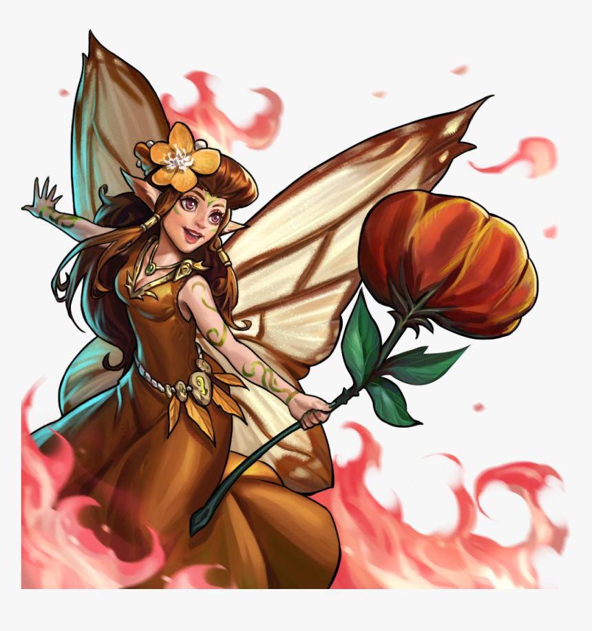
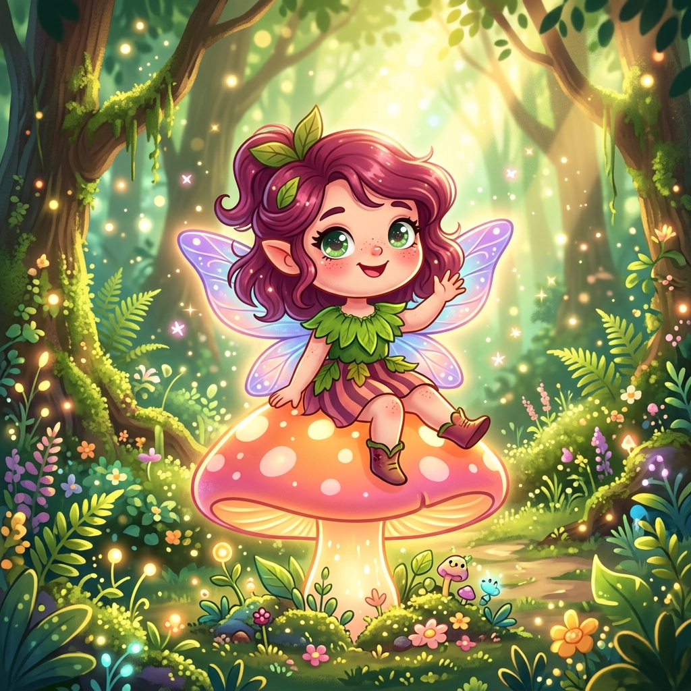
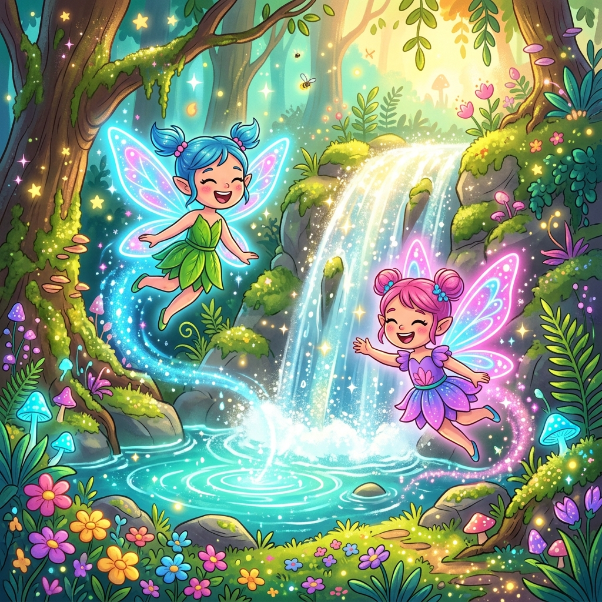
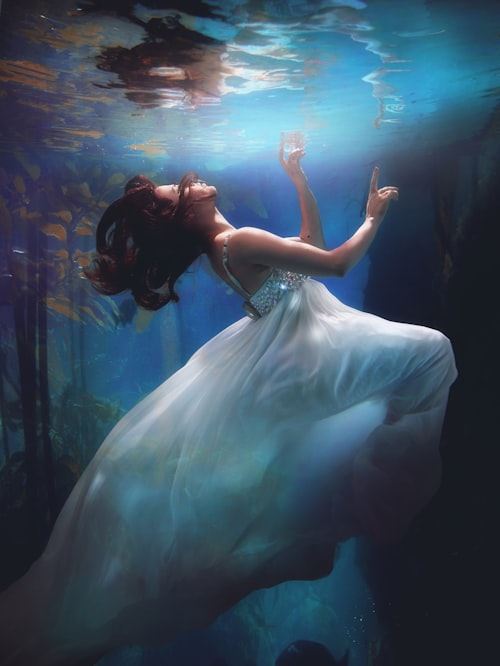
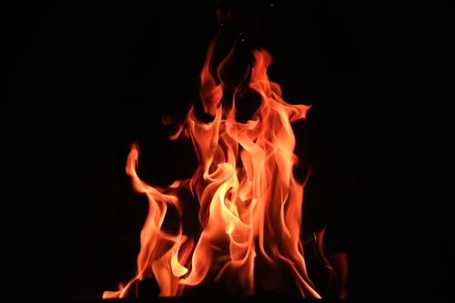

The Pixie
Spirit of the Silver Moonlight
Radiance in the Depths
To see a Spirit Pixie is to see a piece of a fallen star walking the earth. Ethereal and untouchable, they roam the deepest glades where the moonlight struggles to reach, bringing their own silver glow to the darkest corners of the forest.
They represent purity and untamed magic. Their wings leave trails of stardust, and where they tread, silver moss grows for a thousand years. Approach with peace in your heart, for they vanish at the slightest hint of malice.
Creature Gallery



